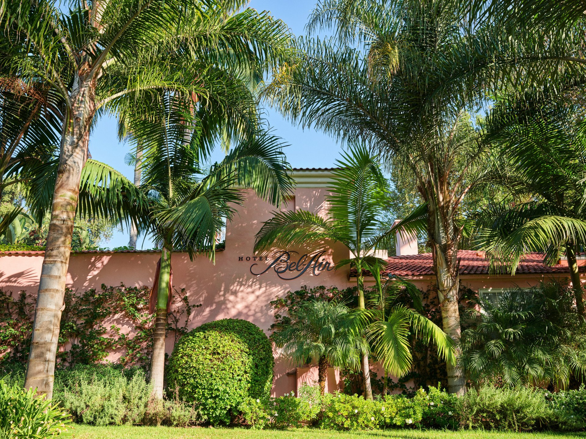
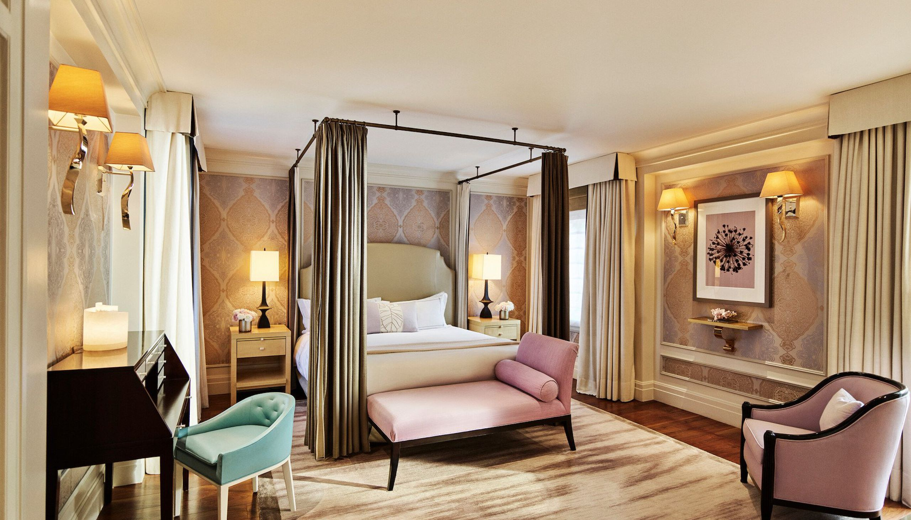
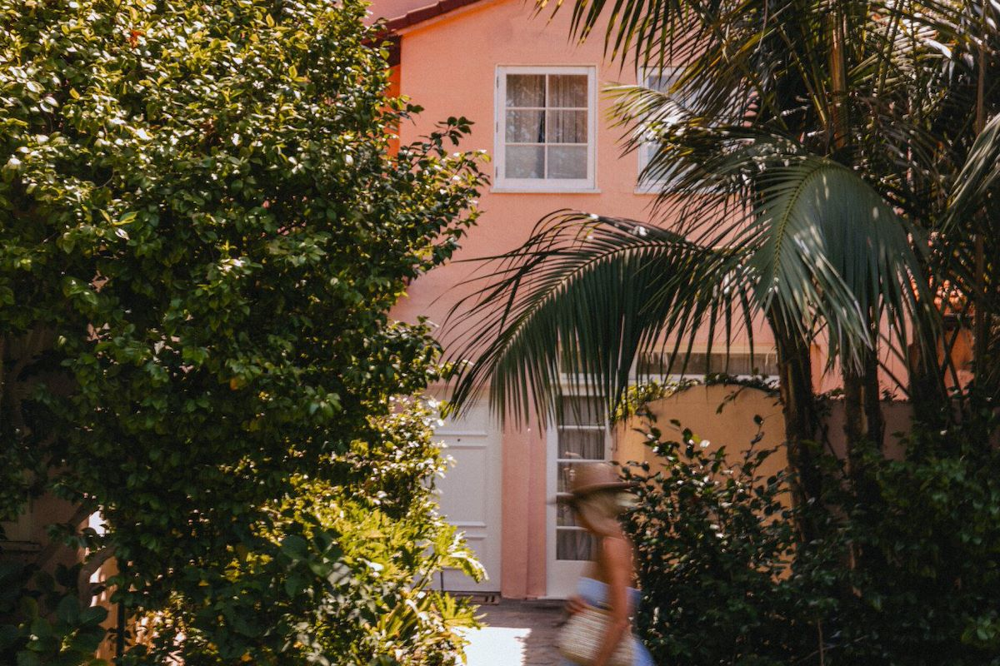

Beverly Hills Favorite
Hotel Bel-Air is the move when the client wants Los Angeles to feel private, gardened, and tucked away.
Hotel Bel-Air is completely different from the Beverly Hills hotel scene. It is canyon-side, calm, and more secluded. You come here when the client wants privacy and softness: gardens, swans, suites with patios or plunge pools, spa time, and a stay that feels removed from the noise without being far from the best of LA.
What makes it unique
It gives Los Angeles a resort-hideaway feeling that most city hotels cannot touch.
The atmosphere is the differentiator. Hotel Bel-Air is for the client who does not want to be seen every second. It is romantic, discreet, and especially strong for longer stays where the room, garden paths, spa, and dining all matter.
Best For
Privacy and romance
Ideal for couples, wellness-minded clients, and travelers who want LA to feel quiet.
Known For
Gardens and suites
The canyon setting, swan lake arrival, and patio-driven suites are the signature.
Dining
Wolfgang Puck
The restaurant and bar make the hotel feel social without turning it into a scene.
Client Type
Discreet VIPs
Great for privacy-first travelers, honeymooners, and clients who want understated LA luxury.



Rooms and suites
I would look closely at the suite categories here, especially the canyon and garden-style suites with patios, fireplaces, or plunge pools. The point of Hotel Bel-Air is not just having a nice room. It is having a private pocket of Los Angeles that feels slower and more personal.
Dining and activities
Wolfgang Puck at Hotel Bel-Air is the main dining anchor, with a terrace and lounge atmosphere that fits the property. This is also a strong wellness stay: spa appointments, slow breakfasts, garden walks, privacy-first dinners, and easy access to Beverly Hills, Brentwood, Malibu, and private cultural or shopping days.
My honest take
If The Beverly Hills Hotel is classic Hollywood, Hotel Bel-Air is the hidden estate. I would use it for clients who want luxury without the constant performance of being in the center of the scene.